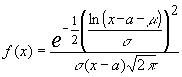

Una variable aleatoria x sigue una distribución normal-transformada si, no siendo ella misma normal, si lo es una cierta función de ella:
z = h (x) -> N [ μ ; σ ]
Un caso especialmente importante es el de la distribución logaritmo-normal , log-normal, o distribución de Galton:
X sigue una distribución de Galton si Z = ln (x - a) -> N ( μ ; σ )
Y , así , su función de densidad será :

que evidentemente , sólo estará definida para valores x > a.
A modo orientativo planteamos la forma de tres distribuciones lognormales con medias y varianza distintas :